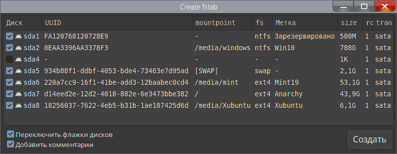

Create_fstab
Назначение
Создаёт fstab для подключения дисков.

Параметры ini-файла
[set] ; секция настроек
FontSize=10 ; размер шрифта (размер шрифта кнопки увеличен на +3 относительно остальных)
Font1=DejaVu Sans Mono Book ; имя шрифта списка
Font2=Noto Sans Regular ; имя шрифта кнопок и флажков
Comments=1 ; флаг (0/1) комментариев, добавляет над каждой строкой информацию о диске
mountpoint=/media/ ; папка куда будут монтироваться диски
ForcedMount=1 ; флаг (0/1) принудительно использует mountpoint из ini-файла, иначе примонтированные используют свои точки монтирования
MountLabel=1 ; флаг (0/1) использует метку в качестве папки монтирования
LCaseLabel=1 ; флаг (0/1) принудительно переводит метку используемую для монтирования в нижний регистр
[perm] ; Раздел флагов монтирования для разных ФС
ntfs=rw,suid,dev,exec,auto,user,async ; для ntfs по умолчанию
; ntfs=defaults,gid=46 ; другой вариант, закомментирован, применял ранее в убунту
root=rw,relatime
ext4=defaults